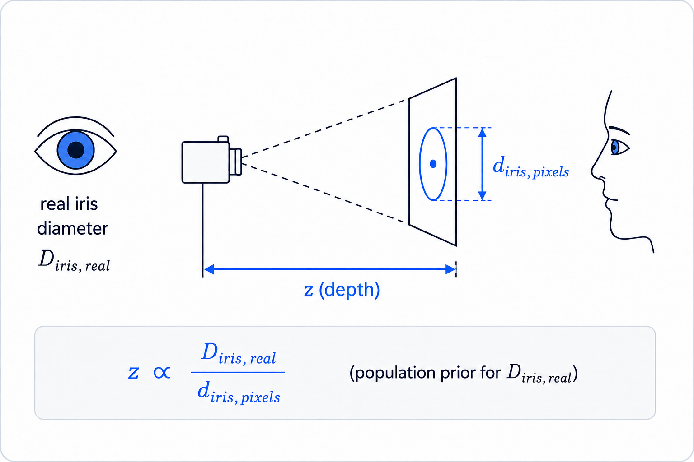

depth cue
Depth from iris size
The apparent iris diameter in the image gives a weak depth cue when combined with a population-level visible iris diameter prior. It is not meant as a calibrated range sensor; it is a practical scale cue for head-pose tracking.
